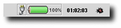
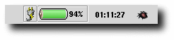
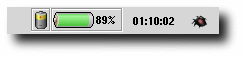
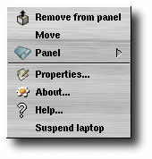
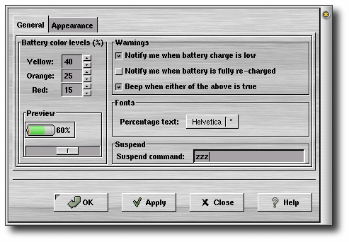
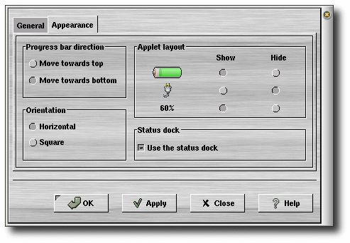
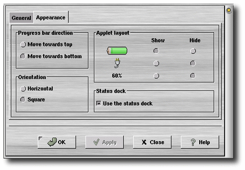
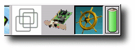
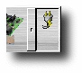

The Battstat Applet, shown in Figure 1, shows the status of the power subsystem in your laptop. To add this applet to your Panel, right click on the Panel and select Panel->Add to panel->Applet->Monitors->Battery Status Utility.
Battstat applet requires no user input. You can, if you so desire, configure it to some degree as described below.

Figure 1: Laptop running on AC.
The figure above is shown when the laptop battery is fully charged.

Figure 2: Battery recharging.
The little flash over the power cord is shown when the laptop battery is recharging. It's flashing on and off until the battery is fully recharged.

Figure 3: Laptop running on battery.
When you are running your laptop on battery it will display this image.

Figure 4: The applet menu
Right-clicking on the applet brings up a menu containing the following items:
You can customize the Battstat applet somewhat by right-clicking on it and choose Properties.... This will bring up the preferences dialog window.

Figure 5: Preferences dialog; General
The properties are:
Yellow: sets the battery level where the progress bar will switch from green to yellow. Default: 40.
Orange: sets the battery level where the progress bar will switch from yellow to orange. Default: 25.
Red: sets the battery level where the progress bar will switch from orange to red. Default: 15.
The preview frame contains the battery progress bar and a draggable slider. By dragging the slider you can preview how it will look when the battery level actually changes. It doesn't affect the battery in any way.
Notify me when battery charge is low: By selecting this, a warning dialog will appear when the power falls below the value in the Red entry box.
Notify me when battery is fully re-charged: By selecting this, a dialog window will appear when the battery is fully re-charged.
Beep when either of the above is tru: If you select this, your laptop will make an audible beep when any of the two above happens.
Percentage text: If you click on this button, a font selection dialog window will appear. You can then select the font of your choice for the percentage text.
Suspend command: Whatever you enter here will be executed when you click on the Suspend laptop in the applet menu. If you clear this entry field, the Suspend laptop entry will be unselectable. For example, if you are using FreeBSD you could enter apm -z or zzz here. Before you enter anything though, first make sure that you can safely suspend your laptop by testing the command in a shell.

Figure 6: Preferences dialog; Appearance
The properties on this page are:

Figure
10:Some parts of the applets
should be hidden...

Figure 11:...and they
are.

Figure
12:The status docklet
To enable the sound support for this applet you need have sound support enabled for GNOME. To select the samples that should be played when the battery reach certain levels right-click on the Panel and select: Programs->Settings->Multimedia->Sound. Make sure you have both the Enable sound server startup and the Sounds for events check buttons enabled. Next click on the Sound Events tab and scroll down to the Battery Status Utility field. Here you can assign samples to the different battery events.
The latest version of the Battstat applet can always be downloaded from: http://battstat.sourceforge.net/
Source: battstat_applet-2.0.9.tar.gz
RPM package (installs in /usr): battstat_applet-2.0.9-2.i386.rpm
Debian package (installs in /usr): battstat-applet_2.0.9.deb